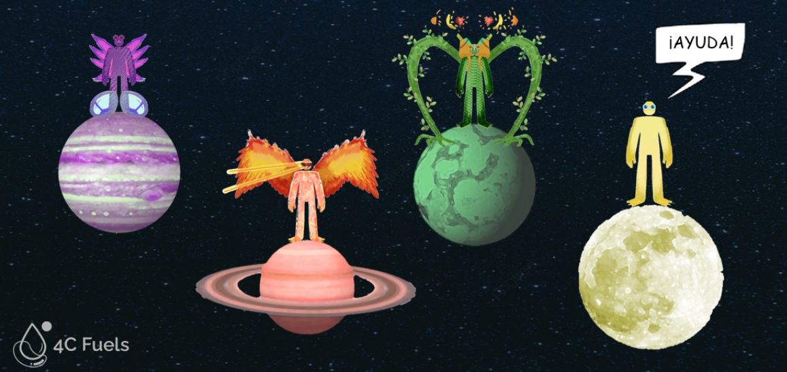
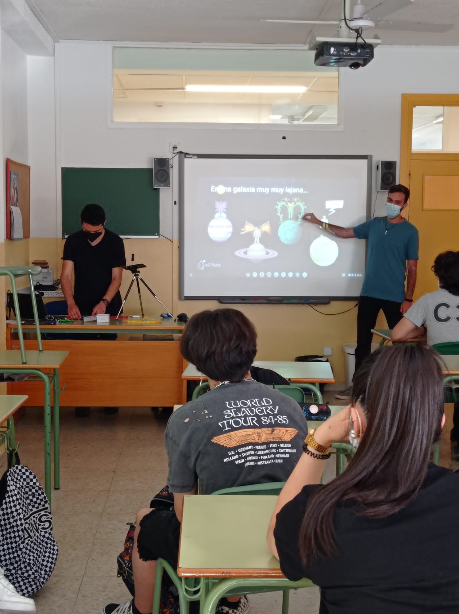
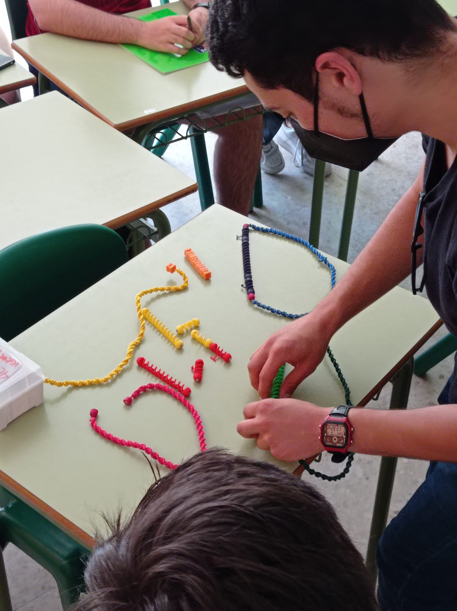

¡Science for everybody!
Discovering and Promoting Synbio at Local High Schools
¡Volver a la versión en Español!
As part of our Integrated Human Practices, we have organized a series of workshops for young people between 15 and 18 years old in order to teach basic synbio concepts through a a gamification strategy. Our goals were generating awareness around sustainability concept and promoting critical thinking. The experience has been pivotal to our analysis of the awareness within the young part of the society. In addition we have presented the main ideas of 4C_Fuels project, and analyzed the opinion of the classes before and after our intervention, regarding synthetic biology knowledge and sustainability aspects.
We at 4C_Fuels believe that through Education, we can change the world for good. By transferring our knowledge on synthetic biology to younger generations, we are unlocking the chance for our listeners to have a better understanding of the possibilities that exist to shift towards a more sustainable economy and where they could have a lot to say.
This would not be possible without a change of mentality of the society we live in. For it to happen, we have targeted High School students who are just about to enter their University studies to maybe change their original vision (if there was any) on synthetic biology and therefore, unveil the benefits synbio can provide to humankind and our planet, while allowing a more inclusive and equal scientific workforce to be attained in a near future.
Adapting a marketing strategy known as KANO Model, we have identified our stakeholders and target groups as a small business. An important part of the local community we interact most with are students and basing ourselves from our previous personal experiences at High School, we do not recall hearing not even once the term ‘Synthetic Biology’.
This is a very good reason why we have decided to target 15 to 18 year-old students from two different schools in Madrid to be eligible to attend this workshop. We have had the opportunity to visit La Salle Maravillas School and Juan de Valdés School and for that we thank them enormously they receptiveness and interest in our project.
To face the challenge of explaining Synthetic Biology to young people, we felt the need of accommodating complex concepts into a more understandable structure for all. This is why we created an interactive presentation with which students could decide which ‘Superpowers’ they would like to grant their character.

This is only an example of how the complexity surrounding synthetic biology can be broken down into simpler and even funnier methodologies to learn it. Obviously, the creation of a supernatural being had a direct relation with the synbio possibilities. Basic concepts of gene expression regulation such as promoter, gen and terminator has been introduced using a gamification approach. This has been demonstrated applying different customization layers to our character and through their combination, we could create a very different being. Eventually the similarities between this “story” and with what we do in the lab are presented, explaining in brief detail the key principles of 4C_Fuels aims and introducing crucial concepts such as sustainability, circular economy and biorefinery.

There was also time for the students to see with their own eyes how to play around with the concepts learned through our workshop. Thanks to a 3D-printed game which represents the promoters, coding regions of genes and terminators used in the lab, the students could get a more realistic glance of what we do when we manipulate DNA.
In order to test the influence of our workshop, we conducted two surveys during the event: one at the beginning, so we have an idea where we started from and another one at the end of the presentation. Both surveys included the exact same questions and in this way we could easily compare results from before and after our intervention. In the end we managed to survey 96 people in total and the results obtained were rather surprising for us.

Los resultados...
The first question asked was to mention three things they would think of when presented with the term ‘Synthetic Biology’. With the answers, we have created two separate Word Maps to better depict the words that were mentioned more than one time. When analyzing the data collected, It was notable that there were many more “I don’t know” answers in the initial survey than the final one and it was established not to present this phrase in the Word Maps, therefore it appears as if the initial Word Map had a lower number of words than the final one. It is true to say that the final word map could be a little biased towards the main aim of our project, as it was the last thing they heard about one of many possibilities on how synthetic biology can be used. The positive side of this is that influence can be created for good and these young people are now more aware of the applications of synthetic biology towards highly relevant fields such as climate change mitigation or transition to a circular economic model.
WordMap Inicial
WordMap Final
The simple synbio concepts (promoter, gene, terminator) mentioned in our talk are well known by biologists and biotech researchers but we found out that between 20 to 40% of high school students have never heard of them before. This placed an opportunity for us to teach them and accomplish our mission with this workshop. Indeed, as we can see from the following diagram, there was room for improvement of our students, achieving a considerably higher rate of correct results in the final survey compared to the initial one.
In fact, as we can see in the results graph, our students were able to improve their understanding of these concepts after the activity, achieving a considerably higher rate of correct results in the final survey compared to the initial one.After our intervention, students have learned the basic concepts of synbio achieving an average of 80% correct answers in the final survey conducted.
Another set of questions surveyed were to rate from 1 (I’m not interested or It is not important) to 5 (I’m super interested or It is very important) their interest in biology or any synbio related field and their opinion on the applications of synbio in order to combat climate change and create a more sustainable society.I n a scale from 1 to 5, an average of 4 points is achieved for awareness of the students surveyed. The workshop has impacted slightly on most of the students, who were already moderately to high conscius about sustainability. However it is outstanding to discover that almost 80% of a science class in a Spanish High School is interested in biology.
With the information disclosed and the success of our activity in high schools, we are committed to continue promoting synthetic biology with the new generations. They are the ones who can decide their own paths of study for now, but one day they will be scientists and experts in their field and it is of good importance to prepare young people for the challenges they may face in the future and propose some tools they could use to solve them, as synthetic biology is.
Our goal at 4C_Fuels is to communicate news and information related to our project and synbio in general, and we intend to do so through our social media channels not only for the young generations but also for the general public. We would like to encourage other iGEM teams, institutions, businesses and governments to promote Synthetic Biology through Education, as it is one of many solutions we can rely on to tackle current issues such as climate change.